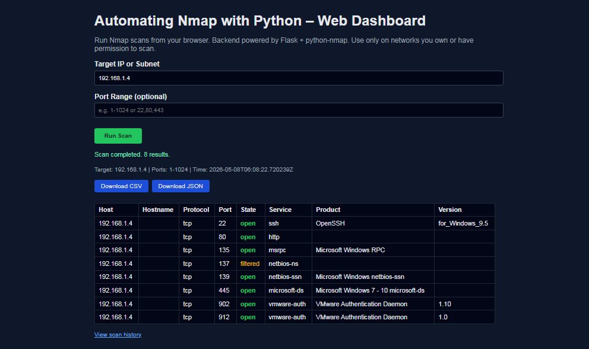

Flask Nmap Web Scanner – Network Port Scanner Built with Python & Flask
Learn How to Create a Flask-Based Nmap Web Scanner: Step-by-Step Guide for Beginners:

In this tutorial, you’ll learn how to build a Flask‑based Nmap web dashboard that lets you run network scans directly from your browser using Python. Instead of running Nmap manually from the command line, you’ll create a simple but powerful interface where you can enter a target IP or subnet, specify a port range, and instantly see open ports, services, and versions in a clean HTML table.
This project is perfect for cybersecurity learners, ethical hackers, DevOps engineers, and Python developers who want a practical Python cybersecurity project for their portfolio. You’ll see how to integrate Nmap, python‑nmap, and Flask to automate port scanning, visualize results, and lay the foundation for more advanced features like scan history, reporting, and dashboards. By the end, you’ll understand how to turn a command‑line scan into a reusable network scanner Python web app that can be extended for real‑world security workflows.
Table of Contents
Introduction
What Is Flask?
Flask is a lightweight, Python‑based web framework designed for building web applications and APIs quickly and with minimal boilerplate. It follows a “micro‑framework” philosophy: instead of forcing a heavy structure, Flask gives you just the essentials—routing, request/response handling, and templating—so you can decide how to structure your project and which extensions to add.
Key points about Flask:
- Written in Python, perfect for integrating with Python automation tools like Nmap wrappers.
- Uses Jinja2 templates to render dynamic HTML pages (e.g., your Nmap scan results table).
- Ideal for small to medium projects, dashboards, and internal tools that need a simple HTTP interface.
In this tutorial, Flask acts as the web front end for your Nmap automation. The browser sends scan requests to Flask, Flask calls Python code that runs Nmap, and then Flask renders the results back to the user.
What Is Nmap?
Nmap (Network Mapper) is a widely used open‑source tool for discovery and security auditing . It’s designed to scan hosts and networks to find:
- Which IP addresses are alive.
- Which ports are open.
- Which services and versions are running (HTTP, SSH, FTP, databases, etc.).
- Sometimes even operating system fingerprints and basic vulnerabilities.
Nmap supports many scan types (TCP SYN, TCP connect, UDP, service/version detection, and more) and is a standard tool for penetration testers, network administrators, and security engineers.
In this project, Nmap is the scanning engine. Python and Flask don’t replace Nmap—they automate it, capture its output, and present it in a user‑friendly dashboard.
Why Combine Flask and Nmap?
By combining Flask and Nmap, you turn a command‑line network scanner into a web‑based network scanning dashboard:
- Flask handles the web UI and HTTP requests.
- Python code (using python-nmap or subprocess) controls Nmap scans programmatically.
- The browser displays structured results: host, port, state, service, and version in tables and reports.
This stack gives you a real, practical Python cybersecurity project that demonstrates:
- Web development with Flask.
- Network scanning with Nmap.
- Automation and reporting using Python code and HTML templates.
Requirements and Prerequisites
Before you start building the Flask Nmap dashboard, make sure you have the following in place.
- Technical Skills
- Basic understanding of Python 3 syntax and virtual environments.
- Familiarity with HTTP, IP addresses, and ports (e.g., 22/SSH, 80/HTTP, 443/HTTPS).
- Very basic knowledge of Flask (routes, templates) is helpful but not mandatory—this tutorial uses a beginner‑friendly app.py + templates/ structure.
- Software Requirements
- Operating System: Windows, Linux, or macOS.
- Python 3.x installed and available in your PATH.
- Nmap installed and accessible from the command line
nmap -Vshould work in your terminal before you run the app.- The following Python packages (added via requirements.txt):
Flask– to build the web dashboard.python-nmap– to control Nmap from Python.- Project Structure
app.py– main Flask application and Nmap integration.templates/index.html– form to submit targets, port ranges and page to display scan results in a table.templates/history.html– page to display scan history.
You can install all dependencies with:
pip install -r requirements.txt
with requirements.txt containing:
Flask
python-nmap
colorama
You should organize your project similar to this layout to follow along easily:
flask-nmap-dashboard/
├── app.py
├── requirements.txt
└── templates/
├── index.html
└── history.html
With these requirements ready, you’re set to start building your Flask Nmap dashboard and automate Nmap scans using Python in a clean, web‑based interface.
Main Flask application
app.py
import json
import sqlite3
import uuid
from datetime import datetime
from pathlib import Path
from flask import (
Flask, render_template, request, jsonify,
Response, g
)
import nmap
app = Flask(__name__)
DB_PATH = Path("scan_history.db")
# ---------- DB Helpers (SQLite) ----------
def get_db():
"""
Get a SQLite connection for the current request.
Based on Flask's SQLite pattern.[web:64]
"""
if "db" not in g:
g.db = sqlite3.connect(DB_PATH)
g.db.row_factory = sqlite3.Row
return g.db
@app.teardown_appcontext
def close_db(exception):
db = g.pop("db", None)
if db is not None:
db.close()
def init_db():
"""
Create the scans table if it does not exist.[web:62]
"""
db = sqlite3.connect(DB_PATH)
db.execute(
"""
CREATE TABLE IF NOT EXISTS scans (
id TEXT PRIMARY KEY,
target TEXT NOT NULL,
ports TEXT NOT NULL,
timestamp TEXT NOT NULL,
result_json TEXT NOT NULL
)
"""
)
db.commit()
db.close()
# ---------- Nmap Logic ----------
def run_nmap_scan(target, ports="1-1024", arguments="-sV"):
nm = nmap.PortScanner(nmap_search_path=(r"C:\Program Files (x86)\Nmap\nmap.exe",))
nm.scan(hosts=target, ports=ports, arguments=arguments)
scan_results = []
for host in nm.all_hosts():
host_state = nm[host].state()
hostname = nm[host].hostname()
for proto in nm[host].all_protocols():
for port in sorted(nm[host][proto].keys()):
pd = nm[host][proto][port]
scan_results.append({
"host": host,
"hostname": hostname or "",
"state": host_state,
"protocol": proto,
"port": port,
"port_state": pd.get("state", ""),
"service": pd.get("name", ""),
"product": pd.get("product", ""),
"version": pd.get("version", "")
})
return scan_results
# ---------- Routes ----------
@app.route("/")
def index():
return render_template("index.html")
@app.route("/api/scan", methods=["POST"])
def api_scan():
data = request.get_json() or {}
target = (data.get("target") or "").strip()
ports = (data.get("ports") or "").strip() or "1-1024"
if not target:
return jsonify({"error": "Target is required."}), 400
try:
results = run_nmap_scan(target, ports=ports, arguments="-sV")
except nmap.PortScannerError as e:
return jsonify({"error": f"Nmap error: {e}"}), 500
except Exception as e:
return jsonify({"error": f"Unexpected error: {e}"}), 500
timestamp = datetime.utcnow().isoformat() + "Z"
meta = {"target": target, "ports": ports, "timestamp": timestamp}
payload = {"meta": meta, "results": results}
# Persist to SQLite
scan_id = uuid.uuid4().hex
db = get_db()
db.execute(
"INSERT INTO scans (id, target, ports, timestamp, result_json) VALUES (?, ?, ?, ?, ?)",
(scan_id, target, ports, timestamp, json.dumps(payload)),
)
db.commit()
return jsonify({
"scan_id": scan_id,
"target": target,
"ports": ports,
"timestamp": timestamp,
"count": len(results),
"results": results
})
@app.route("/api/download/.", methods=["GET"])
def api_download(scan_id, fmt):
db = get_db()
row = db.execute(
"SELECT result_json FROM scans WHERE id = ?",
(scan_id,),
).fetchone()
if not row:
return jsonify({"error": "Invalid or expired scan_id."}), 404
payload = json.loads(row["result_json"])
meta = payload["meta"]
results = payload["results"]
if fmt == "json":
resp = Response(
json.dumps(payload, indent=2),
mimetype="application/json"
)
filename = f"scan_{scan_id}.json"
resp.headers["Content-Disposition"] = f"attachment; filename={filename}"
return resp
elif fmt == "csv":
if not results:
return jsonify({"error": "No data for this scan."}), 400
import io, csv
output = io.StringIO()
fieldnames = ["host", "hostname", "state", "protocol", "port", "port_state", "service", "product", "version"]
writer = csv.DictWriter(output, fieldnames=fieldnames)
writer.writeheader()
for row in results:
writer.writerow(row)
csv_data = output.getvalue()
resp = Response(csv_data, mimetype="text/csv")
filename = f"scan_{scan_id}.csv"
resp.headers["Content-Disposition"] = f"attachment; filename={filename}"
return resp
else:
return jsonify({"error": "Unsupported format. Use csv or json."}), 400
@app.route("/history")
def history():
"""
Simple scan history page: lists previous scans with links.
"""
db = get_db()
rows = db.execute(
"SELECT id, target, ports, timestamp FROM scans ORDER BY timestamp DESC"
).fetchall()
scans = [
{
"id": r["id"],
"target": r["target"],
"ports": r["ports"],
"timestamp": r["timestamp"]
}
for r in rows
]
return render_template("history.html", scans=scans)
if __name__ == "__main__":
if not DB_PATH.exists():
init_db()
else:
init_db()
app.run(host="0.0.0.0", port=5000, debug=True)
The Imports
import json
import sqlite3
import uuid
from datetime import datetime
from pathlib import Path
from flask import Flask, render_template, request, jsonify, Response, g
import nmap
These are all the tools your app needs — covered in detail previously.
| Import | Role / Purpose |
|---|---|
json |
Serialize/deserialize scan results (JSON storage) |
sqlite3 |
Store and retrieve scan history in a local DB |
uuid |
Generate unique scan IDs for tracking results |
datetime |
Timestamp each scan and handle last-checked logs |
pathlib.Path |
Clean, cross-platform file path handling |
flask |
Web framework core tools for the local dashboard |
nmap |
Python-nmap wrapper to run network scans programmatically |
App Instance Creation
app = Flask(__name__)
This creates your Flask web application:
Flask(...)— initializes the app object that handles all routing, templates, and requests.__name__— tells Flask the name of the current Python module so it knows where to find templates and static files (e.g., templates/index.html, static/style.css).
💡 Think of app like the engine of a car — everything else
(routes, DB, scan logic) plugs into it.
Database Path
DB_PATH = Path("scan_history.db")
- Defines the location of your SQLite database file as a
pathlib.Pathobject. scan_history.dbwill be created in the same folder as app.py when init_db() runs.- Using
Pathinstead of a plain string ("scan_history.db") makes it cross-platform — works correctly on both Windows (\) and Linux/Mac (/).
How These Three Lines Connect Everything
app = Flask(__name__) ← The web app engine
DB_PATH = Path(...) ← Where scan data is stored
Every route uses `app` → @app.route("/")
Every DB operation uses DB_PATH → sqlite3.connect(DB_PATH)
These two lines are global — defined once at the top and used throughout the entire app.py
file.
get_db() — Open a DB Connection
def get_db():
if "db" not in g:
g.db = sqlite3.connect(DB_PATH)
g.db.row_factory = sqlite3.Row
return g.db
This function gets (or creates) a SQLite database connection for the current web request.
gis Flask's request-scoped storage — it lives only for the duration of one HTTP request.if "db" not in g— checks if a connection already exists; if yes, reuses it (avoids opening multiple connections per request).sqlite3.connect(DB_PATH)— opens the scan_history.db file.g.db.row_factory = sqlite3.Rowg.db.row_factory = sqlite3.Row — makes query results behave like dictionaries so you can do row["target"] instead of row[1].
💡 Think of it like: A waiter who brings you one menu per visit, not a new one for every question you ask.
close_db() — Auto-Close DB After Request
@app.teardown_appcontext
def close_db(exception):
db = g.pop("db", None)
if db is not None:
db.close()
This runs automatically after every request ends, whether it succeeded or failed.
@app.teardown_appcontextThis runs automatically after every request ends, whether it succeeded or failed.g.pop("db", None)— removes the DB connection from g /li> (returns None if no connection was opened).<db.close()— closes the connection, releasing the file lock and freeing memory.
💡 Think of it like: A janitor who automatically cleans up the room after every meeting ends.
init_db() — Create the Table on Startup
def init_db():
db = sqlite3.connect(DB_PATH)
db.execute("""
CREATE TABLE IF NOT EXISTS scans (
id TEXT PRIMARY KEY,
target TEXT NOT NULL,
ports TEXT NOT NULL,
timestamp TEXT NOT NULL,
result_json TEXT NOT NULL
)
""")
db.commit()
db.close()
This creates the scans table in scan_history.db if it doesn't already exist.
| Column | Type | Purpose |
|---|---|---|
id |
TEXT PRIMARY KEY | UUID hex — unique scan identifier |
target |
TEXT NOT NULL | IP/subnet that was scanned |
ports |
TEXT NOT NULL | Port range used (e.g., 1-1024) |
timestamp |
TEXT NOT NULL | UTC time of the scan |
result_json |
TEXT NOT NULL | Full scan results as a JSON blob |
CREATE TABLE IF NOT EXISTS— safe to call multiple times; won't overwrite existing data.db.commit()— saves the table creation to disk.db.close()— closes the direct connection (this runs at startup, before g exists, so it uses a direct connect/close pattern).
How All Three Connect
App starts → init_db() creates table (once)
Request comes in → get_db() opens connection, stores in g
→ scan runs, data saved to DB
Request ends → close_db() auto-runs, closes connection
This is the official Flask SQLite pattern — clean, lightweight, and perfect for your Nmap Dashboard tutorial.
Function Signature
def run_nmap_scan(target, ports="1-1024", arguments="-sV"):
This defines the function with 3 parameters:
| Parameter | Default | Meaning |
|---|---|---|
target |
(required) | IP or subnet to scan (e.g., 192.168.1.1) |
ports |
"1-1024" |
Port range to scan |
arguments |
"-sV" |
Nmap flags — -sV means detect service versions |
Create the Scanner & Run the Scan
nm = nmap.PortScanner()
nm.scan(hosts=target, ports=ports, arguments=arguments)
nm = nmap.PortScanner()— creates a scanner object (wrapper around the Nmap binary).nm.scan(...)— runs the Nmap scan with the specified parameters.
💡 Think of nm like a remote control — nm.scan() is pressing the "Start" button.
Loop Through the Results (3 Nested Loops)
for host in nm.all_hosts(): # Loop 1: each IP that responded
host_state = nm[host].state() # "up" or "down"
hostname = nm[host].hostname() # Reverse DNS name (if any)
for proto in nm[host].all_protocols(): # Loop 2: "tcp" or "udp"
for port in sorted(nm[host][proto].keys()): # Loop 3: each port number
pd = nm[host][proto][port] # Port details dict
The 3 nested loops exist because Nmap's data is structured in layers:
Scan Result
└── Host (e.g., 192.168.1.5)
└── Protocol (tcp / udp)
└── Port (22, 80, 443...)
└── State, Service, Version...
Extract Port Details & Build a Row
scan_results.append({
"host": host, # IP address
"hostname": hostname or "",# Domain name (empty if none)
"state": host_state, # Host is "up" or "down"
"protocol": proto, # "tcp" or "udp"
"port": port, # Port number (e.g., 80)
"port_state": pd.get("state", ""), # "open", "closed", "filtered"
"service": pd.get("name", ""), # e.g., "http", "ssh"
"product": pd.get("product", ""), # e.g., "Apache httpd"
"version": pd.get("version", "") # e.g., "2.4.51"
})
pd.get("key", "")— safely extracts the value, returns "" if the key doesn't exist (avoids crashes.Each dict= one row in the results table and one row in the CSV export.
Return All Results
return scan_results
Returns a list of dicts — one dict per open port found. For example, scanning 192.168.1.1
with ports 22,80,443 might
return:
json
[
{"host": "192.168.1.1", "port": 22, "service": "ssh", "product": "OpenSSH", "version": "8.9", ...},
{"host": "192.168.1.1", "port": 80, "service": "http", "product": "nginx", "version": "1.22", ...}
]
This list is then serialized to JSON (json.dumps) and stored as a
single blob in your SQLite
scans table.
Full Flow in One Line
Target IP → Nmap binary runs → XML parsed → 3 loops flatten it → list of port dicts returned
Route 1 — "/" Home Page
@app.route("/")
def index():
return render_template("index.html")
The simplest route — when a user visits http://localhost:5000/,
Flask loads and returns the index.html template (your
scan form UI). No logic, just serve the page.
Route 2 — "/api/scan" Run a Scan
This is the core route — the entire scan pipeline lives here.
Read & Validate Input
data = request.get_json() or {}
target = (data.get("target") or "").strip()
ports = (data.get("ports") or "").strip() or "1-1024"
if not target:
return jsonify({"error": "Target is required."}), 400
- Reads the JSON body sent by the frontend (
fetch('/api/scan', {body: JSON.stringify(...)})). {}— prevents crash if no JSON body is sent..strip()— removes accidental spaces from user input.- Returns a 400 Bad Request if
targetis empty.
Run the Scan (with Error Handling)
try:
results = run_nmap_scan(target, ports=ports, arguments="-sV")
except nmap.PortScannerError as e:
return jsonify({"error": f"Nmap error: {e}"}), 500
except Exception as e:
return jsonify({"error": f"Unexpected error: {e}"}), 500
- Calls the
run_nmap_scan()function you saw earlier. PortScannerErrorcatches Nmap-specific failures (e.g., Nmap not installed, invalid target).- The generic
Exceptioncatches anything else — two-layer error safety net.
Save to SQLite
scan_id = uuid.uuid4().hex
db = get_db()
db.execute("INSERT INTO scans (...) VALUES (?, ?, ?, ?, ?)", (...))
db.commit()
- Generates a unique UUID for this scan.
- Builds a payload dict containing both metadata and results.
json.dumps(payload)serializes the entire result as a single JSON blob stored in theresult_jsoncolumn.
Return the Response
return jsonify({
"scan_id": scan_id, "target": target, "ports": ports,
"timestamp": timestamp, "count": len(results), "results": results
})
Sends back everything the frontend needs to display the table and build the download links..
Route 3 — "/api/download/." Download Results
@app.route("/api/download/.", methods=["GET"])
def api_download(scan_id, fmt):
Flask captures both scan_id and fmt (file format) directly from the URL. So:
| URL Example | scan_id | fmt (Format) |
|---|---|---|
/api/download/3e4d5f6a.json |
3e4d5f6a |
json |
/api/download/3e4d5f6a.csv |
3e4d5f6a |
csv |
Fetch from DB
db = get_db()
row = db.execute(
"SELECT result_json FROM scans WHERE id = ?",
(scan_id,),
).fetchone()
if not row:
return jsonify({"error": "Invalid or expired scan_id."}), 404
get_db()— opens (or reuses) the SQLite connection for this request.WHERE id = ?— looks up the scan by UUID; the ? is a parameterized query (prevents SQL injection)..fetchone()— retrieves a single row (since id is a PRIMARY KEY, there's at most one match).- If nothing is found → returns 404 Not Found with a clear error message.
JSON Download
if fmt == "json":
resp = Response(
json.dumps(payload, indent=2),
mimetype="application/json"
)
filename = f"scan_{scan_id}.json"
resp.headers["Content-Disposition"] = f"attachment; filename={filename}"
return resp
json.dumps(payload, indent=2)— re-serializes the full payload as a pretty-printed JSON string (2-space indentation for readability).mimetype="application/json"— tells the browser this is a JSON file.Content-Disposition: attachment— the critical header that forces the browser to download the file instead of displaying it in the tab.
CSV Download
elif fmt == "csv":
if not results:
return jsonify({"error": "No data for this scan."}), 400
import io, csv
output = io.StringIO()
fieldnames = ["host", "hostname", "state", "protocol",
"port", "port_state", "service", "product", "version"]
writer = csv.DictWriter(output, fieldnames=fieldnames)
writer.writeheader()
for row in results:
writer.writerow(row)
csv_data = output.getvalue()
resp = Response(csv_data, mimetype="text/csv")
resp.headers["Content-Disposition"] = f"attachment; filename=scan_{scan_id}.csv"
return resp
Breaking this down piece by piece:
| Line / Component | What it Does |
|---|---|
if not results |
Guard against empty scans — returns 400 if no ports were found |
io.StringIO() |
Creates an in-memory text buffer (like a virtual file, no disk I/O needed) |
csv.DictWriter(output, fieldnames) |
Creates a CSV writer that maps dict keys → columns |
writer.writeheader() |
Writes the first row: host,hostname,state,protocol,... |
writer.writerow(row) |
Writes one port result per CSV row |
output.getvalue() |
Extracts the entire CSV as a string from the buffer |
Unsupported Format
else:
return jsonify({"error": "Unsupported format. Use csv or json."}), 400
If someone tries /api/download/abc123.xml or any other format, they get a clean 400 Bad Request with a helpful message instead of a server crash.
Full Flow Visualized
│
├── Fetch row from SQLite by UUID
├── 404 if not found
├── json.loads → Python dict
│
├── fmt == "csv"?
│ └── Build CSV in memory (io.StringIO)
│ → Set Content-Disposition header
│ → Browser downloads scan_3e4d5f6a.csv ✅
│
└── fmt == "json"?
└── json.dumps with indent
→ Set Content-Disposition header
→ Browser downloads scan_3e4d5f6a.json ✅
Route 4 — "/history" Scan History Page
@app.route("/history")
def history():
When a user visits http://localhost:5000/history, Flask calls this
function and returns the
scan history page. It's a
GET-only route (no methods= specified, so Flask defaults to GET).
Fetch All Scans from SQLite
db = get_db()
rows = db.execute(
"SELECT id, target, ports, timestamp FROM scans ORDER BY timestamp DESC"
).fetchall()
get_db()— opens (or reuses) the SQLite connection for this request.SELECT id, target, ports, timestamp— fetches only 4 columns, notresult_json(no need to load the heavy scan data just for the history list).ORDER BY timestamp DESC— newest scans appear first (most recent at the top)..fetchall()— retrieves all matching rows as a list (unlike .fetchone() which gets just one).
💡 This is an intentional performance optimization — skipping result_json avoids loading potentially large JSON blobs for every scan just to display a summary list.
Convert Rows to Python Dicts
scans = [
{
"id": r["id"],
"target": r["target"],
"ports": r["ports"],
"timestamp": r["timestamp"],
}
for r in rows
]
This is a list comprehension — a compact Python loop that builds a new list.
r (sqlite3.Row) |
Why convert to dict? |
|---|---|
Works like a dict already (r["id"]) |
Jinja2 templates handle plain dicts more reliably. |
| Tied to the DB connection lifecycle | Plain dicts are independent and safe to pass around. |
Each dict in scans represents one row in the history table that
will be rendered in the HTML.
Render the Template
return render_template("history.html", scans=scans)
render_template— loadstemplates/history.htmland processes it with Jinja2.scans=scans— passes the list of scan dicts into the template as a variable.
Inside history.html, Jinja2 loops over it like this:
{% for scan in scans %}
<tr>
<td>{{ scan.timestamp }}</td>
<td>{{ scan.target }}</td>
<td>{{ scan.ports }}</td>
<td>
<a href="/api/download/{{ scan.id }}.json">JSON</a>
<a href="/api/download/{{ scan.id }}.csv">CSV</a>
</td>
</tr>
{% endfor %}
Each row in the table has direct download links built from the scan.id UUID — connecting the
history page directly to
the api_download route you saw earlier.
Full Flow
User visits /history
│
├── SQLite → fetch all scans (id, target, ports, timestamp) newest first
├── Convert sqlite3.Row objects → plain Python dicts
└── Pass to history.html → Jinja2 renders HTML table
│
└── Each row shows: Timestamp | Target | Ports | [JSON] [CSV]
The route is intentionally simple and read-only — it only reads from the DB, never writes, making it fast and safe.
rows = db.execute(
"SELECT id, target, ports, timestamp FROM scans ORDER BY timestamp DESC"
).fetchall()
scans = [{"id": r["id"], "target": r["target"], ...} for r in rows]
return render_template("history.html", scans=scans)
- Fetches all past scans, newest first (
ORDER BY timestamp DESC). - Converts
sqlite3.Rowobjects into plain Python dicts (easier to use in Jinja2 templates). - Passes the list to
history.htmlwhere Jinja2 loops over it to render the table
App Startup
if __name__ == "__main__":
if not DB_PATH.exists():
init_db()
else:
init_db() # Safe: CREATE TABLE IF NOT EXISTS
app.run(host="0.0.0.0", port=5000, debug=True)
| Part | Meaning / Role |
|---|---|
__name__ == "__main__" |
Ensures the script only runs when executed directly (e.g.,
python app.py), not when
imported as a module.
|
init_db() |
Initializes the SQLite database; creates the scans
table if it
doesn't already exist
(idempotent operation). |
host="0.0.0.0" |
Binds the server to all available network interfaces, making it accessible from other devices in the lab. |
port=5000 |
The specific TCP port the Flask web server listens on for incoming dashboard requests. |
debug=True |
Enables auto-reloading and detailed error pages. ⚠️ Disable in production for security. |
Full Request Lifecycle
Browser → POST /api/scan
→ Validate input → run_nmap_scan() → save to SQLite → return JSON
Browser → GET /api/download/abc123.csv
→ Fetch from SQLite → build CSV in memory → send as file download
Browser → GET /history
→ Fetch all scans from SQLite → render history.html table
How Templates Connect to Flask
When Flask calls render_template("index.html") or render_template("history.html", scans=scans), it looks inside the
templates/ folder and processes the files using Jinja2 — a templating engine that lets you
embed Python-like logic
inside HTML.
The Scan Dashboard
index.html
<!DOCTYPE html>
<html lang="en">
<head>
<meta charset="UTF-8">
<title>Nmap Web Dashboard (Flask + API + Downloads)</title>
<style>
body {
font-family: Arial, sans-serif;
margin: 2rem;
background: #0f172a;
color: #e5e7eb;
}
h1 {
margin-bottom: 0.5rem;
}
.container {
max-width: 900px;
margin: 0 auto;
}
label {
display: block;
margin-top: 1rem;
font-weight: 600;
}
input[type="text"] {
width: 100%;
padding: 0.5rem;
margin-top: 0.3rem;
border-radius: 4px;
border: 1px solid #334155;
background: #020617;
color: #e5e7eb;
}
button {
margin-top: 1.5rem;
padding: 0.6rem 1.4rem;
border-radius: 4px;
border: none;
cursor: pointer;
background: #22c55e;
color: #022c22;
font-weight: 600;
}
button:disabled {
opacity: 0.6;
cursor: not-allowed;
}
.status {
margin-top: 1rem;
font-size: 0.9rem;
min-height: 1.2rem;
}
.status.error {
color: #fca5a5;
}
.status.ok {
color: #6ee7b7;
}
.meta {
margin-top: 1rem;
font-size: 0.85rem;
color: #9ca3af;
}
table {
border-collapse: collapse;
width: 100%;
margin-top: 1.5rem;
font-size: 0.9rem;
}
th,
td {
border: 1px solid #1f2933;
padding: 0.4rem 0.5rem;
text-align: left;
}
th {
background: #020617;
}
tr:nth-child(even) {
background: #020617;
}
tr:nth-child(odd) {
background: #020617;
}
.open {
color: #22c55e;
font-weight: 600;
}
.closed {
color: #f87171;
}
.filtered {
color: #eab308;
}
.downloads {
margin-top: 1rem;
display: none;
gap: 0.5rem;
}
.downloads a {
display: inline-block;
padding: 0.4rem 0.9rem;
border-radius: 4px;
background: #1d4ed8;
color: #e5e7eb;
text-decoration: none;
font-size: 0.85rem;
}
</style>
</head>
<body>
<div class="container">
<h1>Automating Nmap with Python – Web Dashboard</h1>
<p style="color:#9ca3af;">
Run Nmap scans from your browser. Backend powered by Flask + python-nmap.
Use only on networks you own or have permission to scan.
</p>
<form id="scan-form">
<label for="target">Target IP or Subnet</label>
<input id="target" name="target" type="text" placeholder="e.g. 192.168.1.10 or 192.168.1.0/24"
required>
<label for="ports">Port Range (optional)</label>
<input id="ports" name="ports" type="text" placeholder="e.g. 1-1024 or 22,80,443">
<button type="submit" id="scan-btn">Run Scan</button>
</form>
<div class="status" id="status"></div>
<div class="meta" id="meta"></div>
<div class="downloads" id="downloads">
<a id="download-csv" href="#" target="_blank">Download CSV</a>
<a id="download-json" href="#" target="_blank">Download JSON</a>
</div>
<table id="results-table" style="display:none;">
<thead>
<tr>
<th>Host</th>
<th>Hostname</th>
<th>Protocol</th>
<th>Port</th>
<th>State</th>
<th>Service</th>
<th>Product</th>
<th>Version</th>
</tr>
</thead>
<tbody id="results-body">
</tbody>
</table>
<p style="margin-top:1rem;font-size:0.85rem;">
<a href="{{ url_for('history') }}" style="color:#60a5fa;">View scan history</a>
</p>
</div>
<script>
const form = document.getElementById("scan-form");
const btn = document.getElementById("scan-btn");
const statusEl = document.getElementById("status");
const metaEl = document.getElementById("meta");
const table = document.getElementById("results-table");
const tbody = document.getElementById("results-body");
const downloadsBox = document.getElementById("downloads");
const downloadCsvLink = document.getElementById("download-csv");
const downloadJsonLink = document.getElementById("download-json");
let lastScanId = null;
form.addEventListener("submit", async (e) => {
e.preventDefault();
const target = document.getElementById("target").value.trim();
const ports = document.getElementById("ports").value.trim();
if (!target) {
statusEl.textContent = "Target is required.";
statusEl.className = "status error";
return;
}
btn.disabled = true;
statusEl.textContent = "Running scan... this may take a moment.";
statusEl.className = "status";
metaEl.textContent = "";
table.style.display = "none";
tbody.innerHTML = "";
downloadsBox.style.display = "none";
lastScanId = null;
try {
const resp = await fetch("/api/scan", {
method: "POST",
headers: { "Content-Type": "application/json" },
body: JSON.stringify({ target, ports })
});
const data = await resp.json();
if (!resp.ok) {
statusEl.textContent = data.error || "Scan failed.";
statusEl.className = "status error";
return;
}
statusEl.textContent = `Scan completed. ${data.count} results.`;
statusEl.className = "status ok";
metaEl.textContent = `Target: ${data.target} | Ports: ${data.ports} | Time: ${data.timestamp}`;
if (data.results && data.results.length > 0) {
data.results.forEach(r => {
const tr = document.createElement("tr");
tr.innerHTML = `
<td>${r.host}</td>
<td>${r.hostname || ""}</td>
<td>${r.protocol}</td>
<td>${r.port}</td>
<td class="${r.port_state}">${r.port_state}</td>
<td>${r.service || ""}</td>
<td>${r.product || ""}</td>
<td>${r.version || ""}</td>
`;
tbody.appendChild(tr);
});
table.style.display = "table";
} else {
table.style.display = "none";
}
// Enable download links for this scan_id
lastScanId = data.scan_id;
if (lastScanId) {
downloadCsvLink.href = `/api/download/${lastScanId}.csv`;
downloadJsonLink.href = `/api/download/${lastScanId}.json`;
downloadsBox.style.display = "flex";
}
} catch (err) {
console.error(err);
statusEl.textContent = "Error calling API: " + err;
statusEl.className = "status error";
} finally {
btn.disabled = false;
}
});
</script>
</body>
</html>
This is the main page served at http://localhost:5000/. It has
three major sections:
1. The Header / Navigation
Run Nmap scans from your browser.
Backend powered by Flask + python-nmap.
Use only on networks you own or have permission to scan.
→ View scan history
- Displays a legal disclaimer — critical for an ethical hacking tool, reminding users to only scan networks they own or have permission to test.
- A "View scan history" link navigates to
/history— thehistory()route in Flask.
2. The Scan Form
This is where the user enters:
- Target — IP address or subnet (e.g., 192.168.1.1 or 192.168.1.0/24).
- Ports — port range (defaults to 1-1024).
- A "Start Scan" button that triggers the JavaScript fetch request.
3. The JavaScript Fetch (Core Frontend Logic)
When the user clicks "Start Scan", the JS does this:
// Step 1 — Read form values
const target = document.querySelector('#target').value;
const ports = document.querySelector('#ports').value;
// Step 2 — POST to /api/scan
const response = await fetch('/api/scan', {
method: 'POST',
headers: { 'Content-Type': 'application/json' },
body: JSON.stringify({ target, ports })
});
// Step 3 — Parse and display results
const data = await response.json();
// Renders results table + download links using scan_id
| Step | What Happens |
|---|---|
| User clicks Scan | JS reads form values and validates the input targets. |
| fetch('/api/scan') | Sends a POST request to the Flask backend with JSON payload. |
| Flask runs Nmap | Backend executes the scanner and returns JSON containing scan_id, results, and count. |
| JS renders table | The browser dynamically builds HTML rows for every open port discovered. |
| Download links built | The UI updates download buttons using the scan_id to point to /api/download/{scan_id}.csv and .json. |
4. Results Table
The results table is dynamically built by JavaScript (not Jinja2) because the scan runs asynchronously after page load. Each row shows:
Host | Hostname | Protocol | Port | State | Service | Product | Version
This maps exactly to the dict keys returned by run_nmap_scan() in
your Python backend.
The Scan History Page
history.html
<!DOCTYPE html>
<html lang="en">
<head>
<meta charset="UTF-8">
<title>Nmap Scan History</title>
<style>
body { font-family: Arial, sans-serif; margin: 2rem; background:#0f172a; color:#e5e7eb; }
h1 { margin-bottom: 0.5rem; }
a { color:#60a5fa; text-decoration:none; }
a:hover { text-decoration:underline; }
table { border-collapse: collapse; width: 100%; margin-top: 1rem; font-size: 0.9rem; }
th, td { border: 1px solid #1f2933; padding: 0.4rem 0.5rem; text-align: left; }
th { background: #020617; }
tr:nth-child(even) { background:#020617; }
tr:nth-child(odd) { background:#020617; }
.actions a { margin-right:0.5rem; }
</style>
</head>
<body>
<h1>Nmap Scan History</h1>
<p><a href="{{ url_for('index') }}">← Back to Dashboard</a></p>
{% if scans %}
<table>
<thead>
<tr>
<th>Timestamp (UTC)</th>
<th>Target</th>
<th>Ports</th>
<th>Actions</th>
</tr>
</thead>
<tbody>
{% for s in scans %}
<tr>
<td>{{ s.timestamp }}</td>
<td>{{ s.target }}</td>
<td>{{ s.ports }}</td>
<td class="actions">
<a href="{{ url_for('api_download', scan_id=s.id, fmt='csv') }}">CSV</a>
<a href="{{ url_for('api_download', scan_id=s.id, fmt='json') }}">JSON</a>
</td>
</tr>
{% endfor %}
</tbody>
</table>
{% else %}
<p>No scans recorded yet.</p>
{% endif %}
</body>
</html>
This page is served at http://localhost:5000/history and uses
Jinja2 templating (server-side
rendering, unlike
index.html which uses client-side JS).
Jinja2 Conditional Block
{% if scans %}
{% else %}
No scans recorded yet.
{% endif %}
{% if scans %}— Jinja2 checks if the scans list passed from Flask is non-empty.- If empty → shows a friendly "No scans recorded yet." message instead of a blank table.
The Table Loop
{% for s in scans %}
<tr>
<td>{{ s.timestamp }}</td> <!-- e.g., 2026-05-07T12:03:22Z -->
<td>{{ s.target }}</td> <!-- e.g., 192.168.1.1 -->
<td>{{ s.ports }}</td> <!-- e.g., 1-1024 -->
<td>
<a href="/api/download/{{ s.id }}.csv">CSV</a>
<a href="/api/download/{{ s.id }}.json">JSON</a>
</td>
</tr>
{% endfor %}
{% for s in scans %}— Jinja2 loop over the list Flask passed in.{{ s.timestamp }}— Jinja2 expression — outputs the value ofs["timestamp"]into HTML.- The CSV and JSON download links are built using
s.id— connecting directly to yourapi_download()Flask route.
Navigation
← Back to Dashboard
A simple link back to / (the index()
route) — keeping navigation between the two pages clean.
Full Two-Page Flow
Flask starts → init_db() creates scan_history.db
│
▼
User visits / → render_template("index.html")
│ Frontend JS handles all scan logic
│ POST /api/scan → results rendered in browser
│ Download links: /api/download/{id}.csv/.json
│
▼
User visits /history → history() fetches scans from SQLite
render_template("history.html", scans=scans)
Jinja2 loops over scans → builds HTML table
Each row has CSV + JSON download links
The key split: index.html uses JavaScript (client-side) to
dynamically show scan results
without reloading the page,
while history.html uses Jinja2 (server-side) to render the table
from data Flask passes in.
Project Conclusion
By now, you’ve built a fully working Flask‑based Nmap web dashboard that can scan targets, enumerate open ports, and display services and versions directly in the browser using Python. Instead of running single‑use commands in a terminal, you now have a reusable network scanner Python app that combines Flask, python-nmap, and HTML templates to automate and visualize Nmap results in a clean, user‑friendly interface.
This project is a solid foundation for more advanced Python cybersecurity projects. You can extend it with scan history, CSV/JSON export, authentication, role‑based access, or integration into a larger security monitoring stack. Whether you are a cybersecurity student, ethical hacker, or backend developer, this Flask Nmap tutorial gives you a practical, portfolio‑ready example of how to turn core security tools into real‑world web applications that your team can actually use.
Other Projects

Shooter Game
This is a beginner-friendly guide for building a Space Shooter game with Python and Pygame, covering coding concepts and project structure.
View Project →
ATM Management System
This Python application implements a multi-user ATM system with SQLite-backed persistence, featuring account management, financial transactions, and administrative controls.
View Project →
Weather App
Responsive weather app with real-time API data, feature comparison, and intuitive design for global city forecasts.
View Project →
Team Card App
Interactive team card application for cricket, featuring dynamic team selection, player filters, and customizable light/dark themes.
View Project →
Password Strength Checker
Multi-Password Batch Strength Checker (C++), designed to check multiple passwords at once, show individual strength, and provide a summary report.
View Project →
VPN Connectivity verification in C
Efficient C program to verify VPN status, routing, and DNS configurations through comprehensive public IP and network adapter analysis.
View Project →